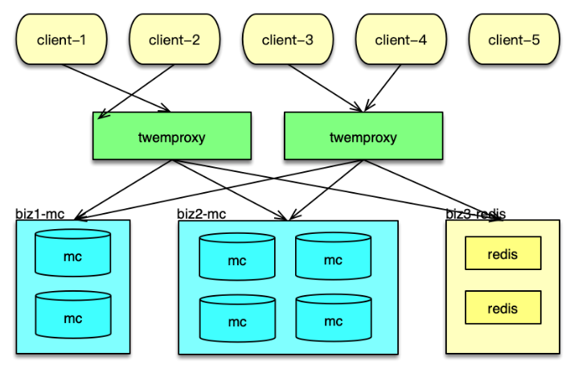
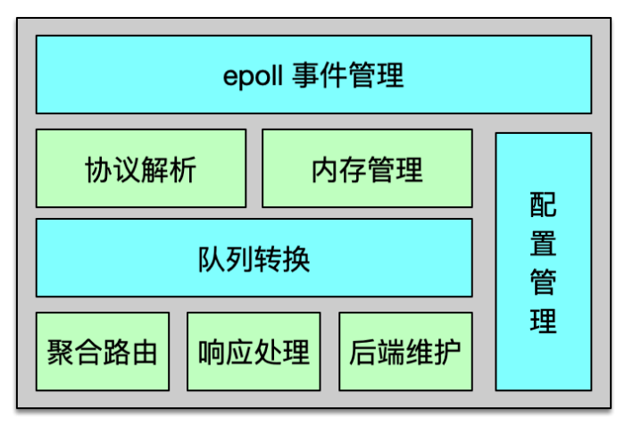
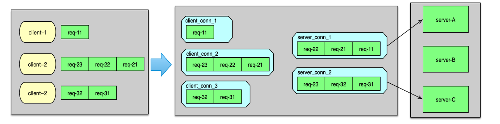
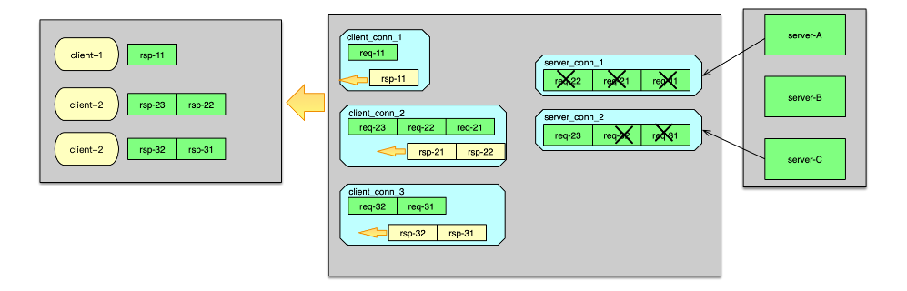
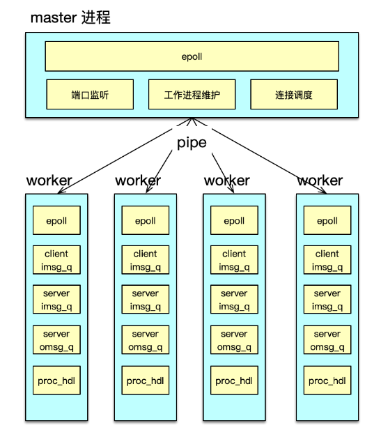
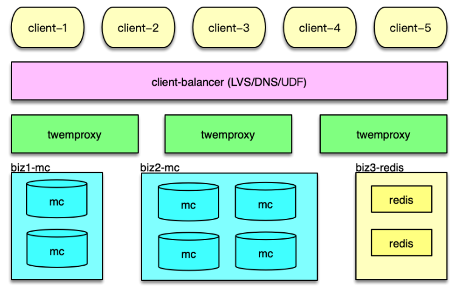
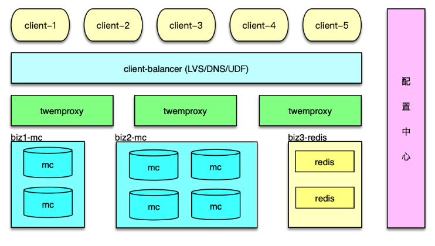
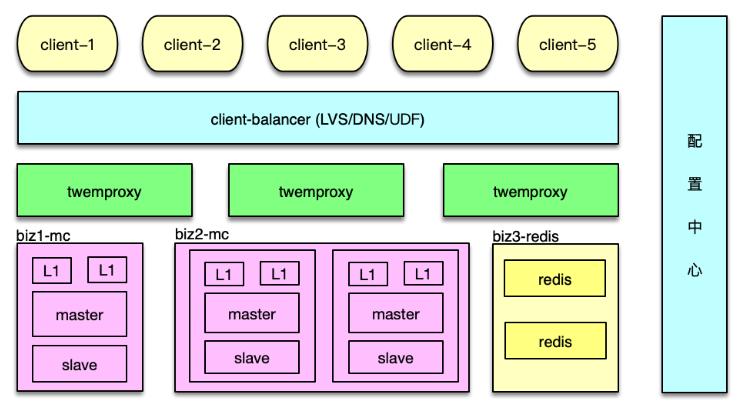
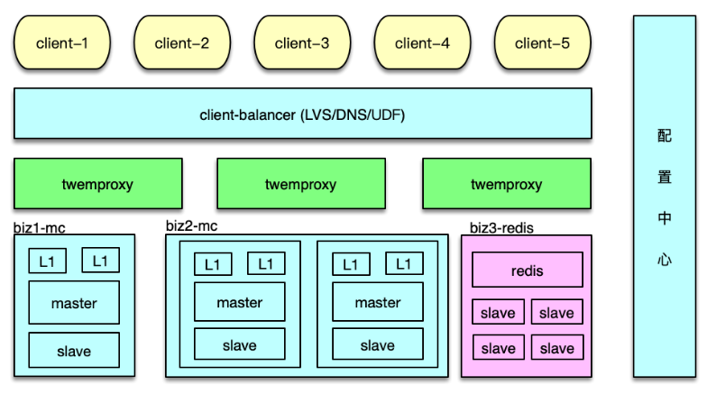
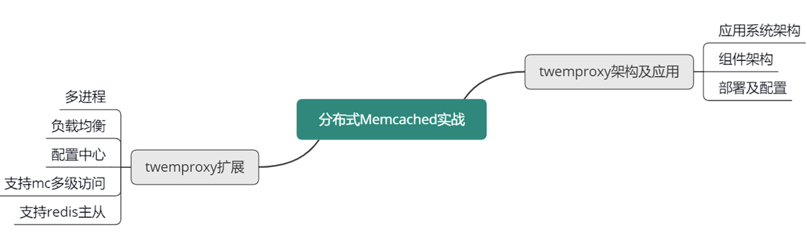

- 00 开篇寄语：缓存，你真的用对了吗？.md.html
- 01 业务数据访问性能太低怎么办？.md.html
- 02 如何根据业务来选择缓存模式和组件？.md.html
- 03 设计缓存架构时需要考量哪些因素？.md.html
- 04 缓存失效、穿透和雪崩问题怎么处理？.md.html
- 05 缓存数据不一致和并发竞争怎么处理？.md.html
- 06 Hot Key和Big Key引发的问题怎么应对？.md.html
- 07 MC为何是应用最广泛的缓存组件？.md.html
- 08 MC系统架构是如何布局的？.md.html
- 09 MC是如何使用多线程和状态机来处理请求命令的？.md.html
- 10 MC是怎么定位key的.md.html
- 11 MC如何淘汰冷key和失效key.md.html
- 12 为何MC能长期维持高性能读写？.md.html
- 13 如何完整学习MC协议及优化client访问？.md.html
- 14 大数据时代，MC如何应对新的常见问题？.md.html
- 15 如何深入理解、应用及扩展 Twemproxy？.md.html
- 16 常用的缓存组件Redis是如何运行的？.md.html
- 17 如何理解、选择并使用Redis的核心数据类型？.md.html
- 18 Redis协议的请求和响应有哪些“套路”可循？.md.html
- 19 Redis系统架构中各个处理模块是干什么的？.md.html
- 20 Redis如何处理文件事件和时间事件？.md.html
- 21 Redis读取请求数据后，如何进行协议解析和处理.md.html
- 22 怎么认识和应用Redis内部数据结构？.md.html
- 23 Redis是如何淘汰key的？.md.html
- 24 Redis崩溃后，如何进行数据恢复的？.md.html
- 25 Redis是如何处理容易超时的系统调用的？.md.html
- 26 如何大幅成倍提升Redis处理性能？.md.html
- 27 Redis是如何进行主从复制的？.md.html
- 28 如何构建一个高性能、易扩展的Redis集群？.md.html
- 29 从容应对亿级QPS访问，Redis还缺少什么？.md.html
- 30 面对海量数据，为什么无法设计出完美的分布式缓存体系？.md.html
- 31 如何设计足够可靠的分布式缓存体系，以满足大中型移动互联网系统的需要？.md.html
- 32 一个典型的分布式缓存系统是什么样的？.md.html
- 33 如何为秒杀系统设计缓存体系？.md.html
- 34 如何为海量计数场景设计缓存体系？.md.html
- 35 如何为社交feed场景设计缓存体系？.md.html
- 捐赠
15 如何深入理解、应用及扩展 Twemproxy？
你好，我是你的缓存课老师陈波，欢迎进入第 15 课时“Twemproxy 框架、应用及扩展”的学习。
Twemproxy 架构及应用
Twemproxy 是 Twitter 的一个开源架构，它是一个分片资源访问的代理组件。如下图所示，它可以封装资源池的分布及 hash 规则，解决后端部分节点异常后的探测和重连问题，让 client 访问尽可能简单，同时资源变更时，只要在 Twemproxy 变更即可，不用更新数以万计的 client，让资源变更更轻量。最后，Twemproxy 跟后端通过单个长连接访问，可以大大减少后端资源的连接压力。
系统架构
接下来分析基于 Twemproxy 的应用系统架构，以及 Twemproxy 组件的内部架构。
如下图所示， 在应用系统中，Twemproxy 是一个介于 client 端和资源端的中间层。它的后端，支持Memcached 资源池和 Redis 资源池的分片访问。Twemproxy 支持取模分布和一致性 hash 分布，还支持随机分布，不过使用场景较少。

应用前端在请求缓存数据时，直接访问 Twemproxy 的对应端口，然后 Twemproxy 解析命令得到 key，通过 hash 计算后，按照分布策略，将 key 路由到后端资源的分片。在后端资源响应后，再将响应结果返回给对应的 client。
在系统运行中，Twemproxy 会自动维护后端资源服务的状态。如果后端资源服务异常，会自动进行剔除，并定期探测，在后端资源恢复后，再对缓存节点恢复正常使用。
组件架构
Twemproxy 是基于 epoll 事件驱动模型开发的，架构如下图所示。它是一个单进程、单线程组件。核心进程处理所有的事件，包括网络 IO，协议解析，消息路由等。Twemproxy 可以监听多个端口，每个端口接受并处理一个业务的缓存请求。Twemproxy 支持 Redis、Memcached 协议，支持一致性 hash 分布、取模分布、随机分布三种分布方案。Twemproxy 通过 YAML 文件进行配置，简单清晰，且便于人肉读写。

Twemproxy 与后端资源通过单个长连接访问，在收到业务大量并发请求后，会通过 pipeline 的方式，将多个请求批量发到后端。在后端资源持续访问异常时，Twemproxy 会将其从正常列表中剔除，并不断探测，待其恢复后再进行请求的路由分发。
Twemproxy 运行中，会持续产生海量请求及响应的消息流，于是开发者精心设计了内存管理机制，尽可能的减少内存分配和复制，最大限度的提升系统性能。Twemproxy 内部，请求和响应都是一个消息，而这个消息结构体，以及消息存放数据的缓冲都是重复使用的，避免反复分配和回收的开销，提升消息处理的性能。为了解决短连接的问题，Twemproxy 的连接也是复用的，这样在面对 PHP client 等短连接访问时，也可以反复使用之前分配的 connection，提升连接性能。
另外，Twemproxy 对消息还采用了 zero copy（即零拷贝）方案。对于请求消息，只在client 接受时读取一次，后续的解析、处理、转发都不进行拷贝，全部共享最初的那个消息缓冲。对于后端的响应也采用类似方案，只在接受后端响应时，读取到消息缓冲，后续的解析、处理及回复 client 都不进行拷贝。通过共享消息体及消息缓冲，虽然 Twemproxy 是单进程/单线程处理，仍然可以达到 6~8w 以上的 QPS。
Twemproxy 请求及响应
接下来看一下 Twemproxy 是如何进行请求路由及响应的。
Twemproxy 监听端口，当有 client 连接进来时，则 accept 新连接，并构建初始化一个 client_conn。当建连完毕，client 发送数据到来时，client_conn 收到网络读事件，则从网卡读取数据，并记入请求消息的缓冲中。读取完毕，则开始按照配置的协议进行解析，解析成功后，就将请求 msg 放入到 client_conn 的 out 队列中。接下来，就对解析的命令 key 进行 hash 计算，并根据分布算法，找到对应 server 分片的连接，即一个 server_conn 结构体，如下图。

如果 server_conn的 in 队列为空，首先对 server_conn 触发一个写事件。然后将 req msg 存入到 server_conn 的 in 队列。Server_conn 在处理写事件时，会对 in 队列中的 req msg 进行聚合，按照 pipeline 的方式批量发送到后端资源。待发送完毕后，将该条请求 msg 从 server_conn 的 in 队列删除，并插入到 out 队列中。 后端资源服务完成请求后，会将响应发送给 Twemproxy。当响应到 Twemproxy 后，对应的 server_conn 会收到 epoll 读事件，则开始读取响应 msg。响应读取并解析后，会首先将server_conn 中，out 队列的第一个 req msg 删除，并将这个 req msg 和最新收到的 rsp msg 进行配对。在 req 和 rsp 匹配后，触发 client_conn 的写事件，如下图。

然后 client_conn 在处理 epoll 写事件时，则按照请求顺序，批量将响应发送给 client 端。发送完毕后，将 req msg 从 client 的 out 队列删除。最后，再回收消息缓冲，以及消息结构体，供后续请求处理的时候复用。至此一个请求的处理彻底完成。
Twemproxy 安装和使用
Twemproxy 的安装和使用比较简单。首先通过 Git，将 Twemproxy 从 GitHub clone 到目标服务器，然后进入 Twemproxy 路径，首先执行 $ autoreconf -fvi，然后执行 ./configure ，最后执行 make（当然，也可以再执行 make install），这样就完成了 Temproxy 的编译和安装。然后就可以通过 src/nutcracker -c /xxx/conf/nutcracker.yml 来启动 Twemproxy 了。
Twemproxy 代理后端资源访问，这些后端资源的部署信息及访问策略都是在 YAML 文件中配置。所以接下来，我们简单看一下 Twemproxy 的配置。如图所示，这个配置中代理了 2 个业务数据的缓存访问。一个是 alpha，另一个是 beta。在每个业务的配置详情里。首先是 listen 配置项，用于设置监听该业务的端口。然后是 hash 算法和分布算法。Auto_eject_hosts 用于设置在后端 server 异常时，是否将这个异常 server 剔除，然后进行 rehash，默认不剔除。Redis配置项用于指示后端资源类型，是 Redis 还是 Memcached。最后一个配置项 servers，用于设置资源池列表。
以 Memcached 访问为例，将业务的 Memcached 资源部署好之后，然后将 Mc 资源列表、访问方式等设到 YAML 文件的配置项，然后启动 Twemproxy，业务端就可以通过访问 Twemproxy ，来获取后端资源的数据了。后续，Mc 资源有任何变更，业务都不用做任何改变，运维直接修改 Twemproxy 的配置即可。
Twemproxy 在实际线的使用中，还是存在不少问题的。首先，它是单进程/单线程模型，一个 event_base 要处理所有的事件，这些事件包括 client 请求的读入，转发请求给后端 server，从 server 接受响应，以及将响应发送给 client。单个 Twemproxy 实例，压测最大可以到 8w 左右的 QPS，出于线上稳定性考虑，QPS 最多支撑到 3~4w。而 Memcached 的线上 QPS，一般可以达到 10~20w，一个 Mc 实例前面要挂 3~5 个 Twemproxy 实例。实例数太多，就会引发诸如管理复杂、成本过高等一系列问题。
其次，基于性能及预防单点故障的考虑，Twemproxy 需要进行多实例部署，而且还需要根据业务访问量的变化，进行新实例的加入或冗余实例的下线。多个 Twemproxy 实例同时被访问，如果 client 访问策略不当，就会出现有些 Twemproxy 压力过大，而有些却很空闲，造成访问不均的问题。
再次，后端资源在 Twemproxy 的 YAML 文件集中配置，资源变更的维护，比直接在所有业务 client 端维护，有了很大的简化。但在多个 Twemproxy 修改配置，让这些配置同时生效，也是一个复杂的工作。
最后，Twemproxy 也无法支持 Mc 多副本、多层次架构的访问策略，无法支持 Redis 的Master-Slave 架构的读写分离访问。
为此，你可以对 Twemproxy 进行扩展，以更好得满足业务及运维的需要。
Twemproxy 扩展
多进程改造
性能首当其冲。首先可以对 Twemproxy 的单进程/单线程动刀，改为并行处理模型。并行方案可以用多线程方案，也可以采用多进程方案。由于 Twemproxy 只是一个消息路由中间件，不需要额外共享数据，采用多进程方案会更简洁，更适合。
多进程改造中，可以分别构建一个 master 进程和多个 worker 进程来进行任务处理，如下图所示。每个进程维护自己独立的 epoll 事件驱动。其中 master 进程，主要用于监听端口，accept 新连接，并将连接调度给 worker 进程。

而 worker 进程，基于自己独立的 event_base，管理从 master 调度给自己的所有 client 连接。在 client 发送网络请求到达时，进行命令读取、解析，并在进程内的 IO 队列流转，最后将请求打包，pipeline 给后端的 server。
在 server 处理完毕请求，发回响应时。对应 worker 进程，会读取并解析响应，然后批量回复给 client。
通过多进程改造，Twemproxy 的 QPS 可以从 8w 提升到 40w+。业务访问时，需要部署的Twemproxy 的实例数会大幅减少，运维会更加简洁。
增加负载均衡
对于多个 Twemproxy 访问，如何进行负载均衡的问题。一般有三种方案。
第一种方案，是在 Twemproxy 和业务访问端之间，再增加一组 LVS，作为负载均衡层，通过 LVS 负载均衡层，你可以方便得增加或减少 Twemproxy 实例，由 LVS 负责负载均衡和请求分发，如下图。

第二种方案，是将 Twemproxy 的 IP 列表加入 DNS。业务 client 通过域名来访问 Twemproxy，每次建连时，DNS 随机返回一个 IP，让连接尽可能均衡。
第三种方案，是业务 client 自定义均衡策略。业务 client 从配置中心或 DNS 获取所有的Twemproxy 的 IP 列表，然后对这些 Twemproxy 进行均衡访问，从而达到负载均衡。
方案一，可以通过成熟的 LVS 方案，高效稳定的支持负载均衡策略，但多了一层，成本和运维的复杂度会有所增加。方案二，只能做到连接均衡，访问请求是否均衡，无法保障。方案三，成本最低，性能也比前面 2 个方案更高效。推荐使用方案三，微博内部也是采用第三种方案。
增加配置中心
对于 Twemproxy 配置的维护，可以通过增加一个配置中心服务来解决。将 YAML 配置文件中的所有配置信息，包括后端资源的部署信息、访问信息，以配置的方式存储到配置中心，如下图。

Twemproxy 启动时，首先到配置中心订阅并拉取配置，然后解析并正常启动。Twemproxy 将自己的 IP 和监听端口信息，也注册到配置中心。业务 client 从配置中心，获取Twemproxy 的部署信息，然后进行均衡访问。
在后端资源变更时，直接更新配置中心的配置。配置中心会通知所有 Twemproxy 实例，收到事件通知，Twemproxy 即可拉取最新配置，并调整后端资源的访问，实现在线变更。整个过程自动完成，更加高效和可靠。
支持 M-S-L1 多层访问
前面提到，为了应对突发洪水流量，避免硬件局部故障的影响，对 Mc 访问采用了Master-Slave-L1 架构。可以将该缓存架构体系的访问策略，封装到 Twemproxy 内部。实现方案也比较简单。首先在 servers 配置中，增加 Master、Slave、L1 三层，如下图。

Twemproxy 启动时，每个 worker 进程预连所有的 Mc 后端，当收到 client 请求时，根据解析出来的指令，分别采用不同访问策略即可。
- 对于 get 请求，首先随机选择一个 L1 来访问，如果 miss，继续访问 Master 和 Slave。中间在任何一层命中，则回写。
- 对于 gets 请求，需要以 master 为准，从 master 读取。如果 master 获取失败，则从 slave获取，获取后回种到 master，然后再次从 master 获取，确保得到 cas unique id 来自 master。
- 对于 add/cas 等请求，首先请求 master，成功后，再将 key/value 通过 set 指令，写到 slave 和所有 L1。
- 对于 set 请求，最简单，直接 set 所有资源池即可。
- 对于 stats 指令的响应，由 Twemproxy 自己统计，或者到后端 Mc 获取后聚合获得。
Redis 主从访问
Redis 支持主从复制，为了支持更大并发访问量，同时减少主库的压力，一般会部署多个从库，写操作直接请求 Redis 主库，读操作随机选择一个 Redis 从库。这个逻辑同样可以封装在Twemproxy 中。如下图所示，Redis 的主从配置信息，可以用域名的方式，也可以用 IP 端口的方式记录在配置中心，由 Twemproxy 订阅并实时更新，从而在 Redis 增减 slave、主从切换时，及时对后端进行访问变更。

本课时，讲解了大数据时代下大中型互联网系统的特点，访问 Memcached 缓存时的经典问题及应对方案；还讲解了如何通过分拆缓存池、Master-Slave 双层架构，来解决 Memcached 的容量问题、性能瓶颈、连接瓶颈、局部故障的问题，以及 Master-Slave-L1 三层架构，通过多层、多副本 Memcached 体系，来更好得解决突发洪峰流量和局部故障的问题。
本节课重点学习了基于 Twemproxy 的应用系统架构方案，学习了 Twemproxy 的系统架构和关键技术，学习了 Twemproxy 的部署及配置信息。最后还学习了如何扩展 Twemproxy，从而使 Twemproxy 具有更好的性能、可用性和可运维性。
可以参考下面的思维导图，对这些知识点进行回顾和梳理。

© 2019 - 2023 Liangliang Lee. Powered by gin and hexo-theme-book.